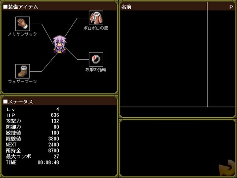

■３．５ 装備変更
| |

| １．ステータス一覧 |
| |
・Lv ルカの現在のレベルです。モンスターを倒して得られる経験値を稼ぐとレベルが上がっていきます。
レベルが上がると、HPも上昇します。
・HP ルカの最大HPです。高ければ高いほど戦闘で倒れにくくなります。
・攻撃力 この値が大きいほど、敵に与えるダメージが大きくなります。装備アイテムでのみ変化します。
・防御力 この値が大きいほど、敵から受けるダメージが小さくなります。装備アイテムでのみ変化します。
・敏捷値 この値が大きいほど、敵の攻撃間隔が長くなります。装備アイテムでのみ変化します。
・経験値 現在までに獲得した総経験値量です。
・NEXT 次のレベルになるために必要な経験値です。
・所持金 現在の所持金です。
・最大コンボ 今までの最大コンボ数です。
・TIME 今までのプレイ時間です。
|
| ２．装備の特徴 |
| |
画面左上のアイテムアイコンをクリックすると、装備アイテムを変更することが出来ます。
装備アイテムには「グローブ」、「衣服」、「ブーツ」、「アクセサリー」の４種類あります。
「グローブ」、「衣服」、「ブーツ」はショップで購入でき、「アクセサリー」は探索中に手に入れることが出来ます。
- グローブ……攻撃力に影響。
- 衣服……防御力に影響。
- ブーツ……敏捷値に影響。
- アクセサリー……アイテム出現率UP,経験値取得量UPなど様々。
|
|
|